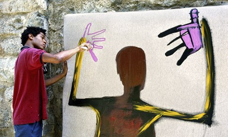
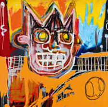

♦ Artişti ♦
Primii artişti graffiti care au ridicat această mişcare la rangul de artă au fost Jean-Michel Basquiat şi Keith Haring.
Jean-Michel Basquiat
Este primul pictor american ale cărui opere au apărut sub forma unor graffiti pe străzile, metrourile şi pe garniturile de vagoane din transportul în comun ale New York-ului. Basquiat a fost cel mai de succes dintre aşa-numiţii „artişti ai străzii”, lucrările lui ajungând, în prima parte a anilor ’80, în galeriile oraşului New York.
 |
Basquiat s-a născut în anul 1960, tatăl lui fiind originar din Haiti, iar mama sa din Puerto Rico. A crescut în Brooklyn, New York. Cu toate că nu avea altă educaţie în domeniul artei decât cea primită în liceu, el a exploatat plin de energie o gamă largă de imagini inspirate de la cărţile cu benzi desenate (comic books) până la hieroglifele egiptene, de la lucrările artistului spaniol Pablo Picasso, până la cele realizate de copii. De asemenea a combinat imagini inspirate din arta populară africană, caraibeană şi europeană.
|  |
Basquiat şi-a început cariera – ilegală – de pictor de graffiti, pe străzile New York-ului, împreună cu colegul său de liceu, Al Diaz. Pseudonimul folosit de Basquiat pentru semnarea tag-urilor era SAMO. Dar, până în 1979, colaborarea sa cu Diaz a luat sfârşit, Basquiat asociindu-se cu artişti şi muzicieni din partea de est a Manhattan-ului. A început de asemenea să picteze tablouri.
Trecerea rapidă din anonimatul de pe străzi în vizorul opiniei publiceşi a artiştilor a avut loc în anii ’80 când a fost selectat de Colab, o asociaţie a artiştilor, să colaboreze la organizarea unui spectacol în Times Square. El a pictat unul din pereţii expoziţiei, folosind deopotrivă tuburi de spray şi pensule. Basquiat ajunge să fie adorat de către comunitatea bogată a artiştilor din centrul New York-ului, care susţinea că opera sa este manifestarea unui „geniu primitiv”. Cu toate acestea, au existat voci care au afirmat că anumite cercuri au dorit doar să-i exploateze talentele native.
Basquiat a fost de asemenea admirat şi de artiştii new yorkezi Keith Haring şi Kenny Sharf, care doreau să integreze aşa-zisa „artă a străzii” în opera lor. În anii 1983 şi 1984, Basquiat a colaborat la realizarea mai multor tablouri cu artistul american Andy Warhol şi artistul italian Francesco Clemente.
Operele viu colorate şi de mari dimensiuni ale lui Basquiat combinau expresionismul abstract american cu diverse imagini, din care nu lipseau schelete şi câini, care se regăsesc din plin în întreaga sa operă graffiti. Lucrările sale de la începutul anilor ’80 cuprind o varietate largă de subiecte, de la cranii, la desene aduse în semn de tribut unor vedete ale sportului şi jazz-ului.
La început deosebit de productiv, Basquiat a devenit nedemn de încredere sub stresul cauzat de faima pe care a dobândit-o. Cu toate că a încercat să se lase de obiceiul de a consuma heroină, Jean-Michel Basquiat a murit în urma unei supradoze în atelierul sau din Manhattan, în anul 1988, la vârsta de numai 27 de ani.
Keith Haring
Este un pictor american al cărui simplu stil simbolistic de pictură, reprezentat prin câini, bebeluşi şi figurine dansând, i-a adus recunoaştere internaţională în anii ’80.
Haring s-a născut în anul 1958 şi a copilărit în Kutztown, Pennsylvania. A urmat cursurile şcolii de Arte din Pittsburgh, Pennsylvania şi-a deschis prima expoziţie în anul 1978, la Centru de arte din Pittsburgh. În anul 1977, după ce a audiat discursul artistului bulgaro-american Christo, referitor la crearea unor lucrări de dimensiuni mari pentru a fi expuse în natură, Haring s-a decis să creeze lucrări destinate locurilor publice. În anul 1978, el s-a mutat în oraşul New York, unde a urmat cursurile şcolii de Arte Vizuale (până în anul 1979).
 |
Haring a devenit interesat de contururile groase, caracteristice artei graffiti realizată în metrourile americane, împrietenindu-se cu aşa-numitul „copil graffiti” Jean-Michel Basquiat. În anul 1979, Haring decupează titluri din ziare pentru a le reasambla, creând titluri false, precum „Regan ucis de un poliţist erou”, apoi le-a împrăştiat pe pereţii şi panourile publicitare ale oraşului. Aceste imagini erau desenate fie cu carioci groase negre, fie cu cretă albă. Eforturile sale l-au făcut faimos în rândul new yorkezilor, dar a şi fost de mai multe ori arestat pentru această activitate „artistică” a sa.
Înainte de a se impune în circuitul galeriilor, Harings a realizat tag-uri care se referă la culturile născute din benzile desenate şi din universul lui Walt Disney. Expoziţia sa din anul 1982, deschisă la prestigioasa Galerie Tony Shafrazi din New York a avut un succes enorm, practic lansându-l în noua sa carieră de artist graffiti.
Opera lui Haring s-a inspirat din diverse surse: din opera artistului american Andy Warhol şi alţi asemenea artişti reprezentanţi ai mişcării pop, din ritmul şi mişcările dansurilor africane, cubaneze şi ale stilului hip-hop şi din curentul afro-cubanez al picturilor pe corp. În anul 1987, Haring a pictat liniile şi simbolurile caracteristice stilului său pe propriul său corp iar apoi s-a lăsat fotografiat în Times Square din New York. El a decorat, de asemenea, corpul solistului american Grace Jones şi al dansatorului american Bill T. Jones.
Haring a realizat graffiti în diverse locuri ale lumii, incluzând Statele Unite, Europa şi Australia. Câteva dintre aceste lucrări au supravieţuit timpului (de exemplu, cea de pe peretele depozitului Muzeului Stedelijk din Amsterdam, Olanda, realizat în anul 1986), dar altele au fost distruse (precum cea realizată pe Zidul Berlinului în Germania, tot în anul 1986).
 |
 |
 |
În anul 1986, ca o reacţie împotriva elitismului din lumea artiştilor, Haring a deschis în New York Pop Shop, un magazin care vindea suveniruri create de el. Desenele bizare, dar pline de energie, ale lui Haring au fost aplicate pe o gamă largă de produse, de la tricouri până la un balon, în anul 1989.
În anul 1988, Haring a aflat că suferă de sindromul imunodeficitar dobândit (SIDA), iar în următorii doi ani şi-a canalizat energia în educarea publicului cu privire la virusul HIV şi la pericolul consumului de droguri. Keith Haring a murit în anul 1990, întrând alături de colegul său de breaslă Jean-Michel Basquiat în istoria mişcării graffiti din lume.
După moartea celor doi „părinţi” ai graffiti-ului, această artă a continuat, într-o măsură mai mare sau mai mică, să influenţeze societatea contemporană. Elocvent este filmul „Free Willy” (regizor Simon Wincer), realizat în anul 1993, unde, vizând fenomenul graffiti, regizorul ne face părtaşii unei prietenii ciudate dintre un băieţel şi o balenă. Personajul principal Jesse (interpretat de Jason James Richter) este prins desenând graffiti pe pereţii unui parc (semn al revoltei tinerei generaţii). Fiind constrâns să îndepărteze desenele, îl întâlneşte pe Willy, o balenă Orca, ultima achiziţie a acvariului parcului, împreună cu care va porni într-o frumoasă aventură.
Mişcării graffiti i s-au dedicat şi alţi artişti americani, cum ar fi Aaron Siskind (1903-1991), Cy Twombly (n.1928), Raymond Saunders (n.1934) şi Julian Schnabel (n.1951). În anul 1996, Schnabel a regizat filmul, intitulat sugestiv, „Basquiat”, în care prezintă viaţa celui mai reprezentativ artist al fenomenului graffiti.
Unii artişti au început să folosească tot mai mult programele de calculator pentru a crea o artă care pune sub semnul întrebării propria sa existenţă. În anul 1997, artistul american Peter Halley a instalat la Muzeul de Arte Moderne din New York un computer prin intermediul căruia spectatorii puteau schimba imaginile şi culorile pe care artistul le-a creat. Acest eveniment a ridicat o sumedenie de întrebări: Ce este opera de artă? Este imaginea de pe monitorul calculatorului? Este programul folosit? Iar dacă programul este interactiv, atunci cine este artistul? Sau însuşi sensul cuvântului artist nu mai corespunde tendinţelor contemporane? Acestea sunt doar câteva întrebări la care arta secolului al XX-lea nu a găsit încă răspunsul.